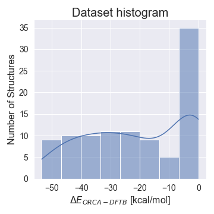
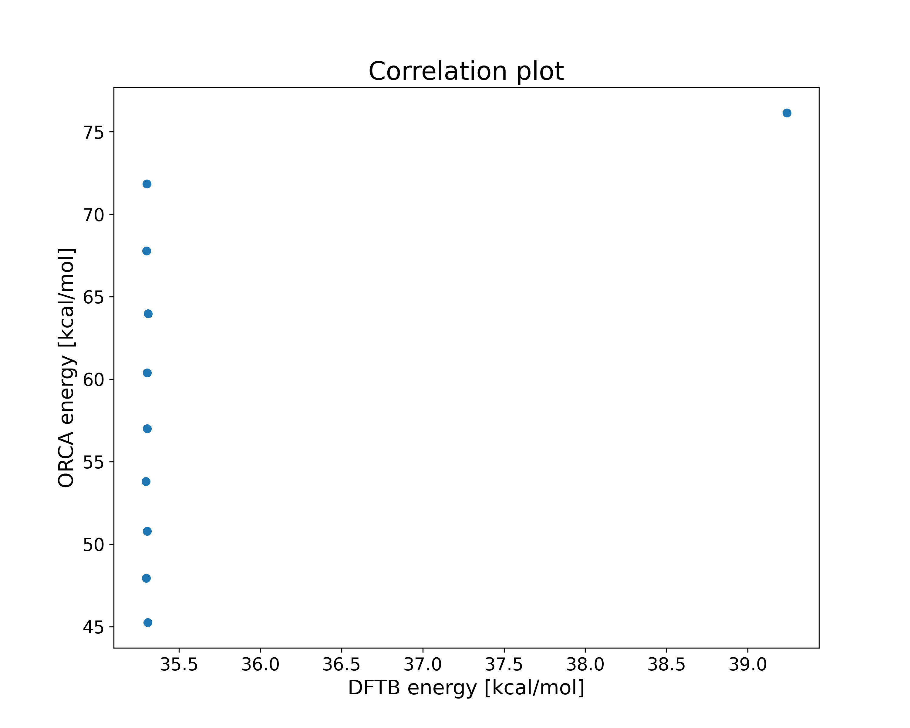
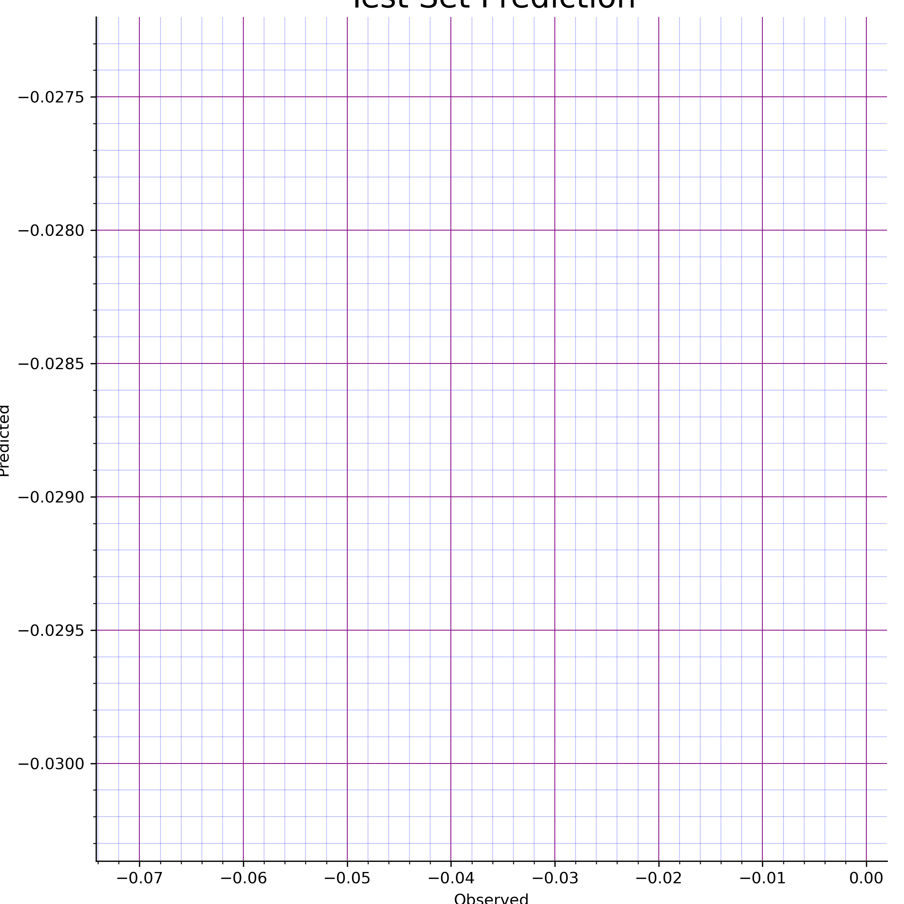

The data distribution can be observed at Fig.1, the training data had a range from {%"Train Range" in output_dict%} kcal/mol and the test data had ranged on {%"Test range" in output_dict%} kcal/mol.:

Fig.1 - Data distribution
The corelation between the ORCA generated data against the DFTB+ generated data can be seen in Fig. 2, while the delta correlation can be seen at Fig. 3. The energies used as reference were:
{%"DFTB reference energy" in output_dict%} for DFTB
{%"ORCA reference energy" in output_dict%} for DFT

Fig.2 - ORCA vs. DFTB
Fig.3 - Delta correlation
The used neural network consisted on {%"Neurons" in output_dict%} neurons distributed in {%"Layers" in output_dict%} hidden layers for each {%"Elements" in output_dict%} of the system. The activation function was {%"Activation function" in output_dict%}. The input layer consisted on {%"Number of symmetries" in output_dict%} for each one of the atoms.
The data set was divided in Training, Validation and Test with its respective number of structures: {%"Training structures" in output_dict%},{%"Validation structures" in output_dict%}, {%"Testing structures" in output_dict%}.
The RMSE of the training was {%"RMSE" in output_dict%} and the MAE was of {%"MAE" in output_dict%}. The accuarcy plot of the test set can be seen at Fig.4.

Fig. 4 - Test Set